Offline user guide
Lab599 Utility Help
A practical tour of the macOS app, from connecting a TX-500 to operating digital modes and updating firmware. The screenshots show the app with no physical radio connected; demo and simulation displays are labeled.
1. First steps
- Connect the Lab599 CAT-USB adapter to the radio and Mac. Turn the radio on normally for CAT tasks.
- Choose the adapter's
/dev/cu.*port in the top bar. Use the refresh icon after connecting a cable. - Set the radio's CAT protocol to LAB599 at 9600 baud, 8N1. Menu numbers vary by model and firmware.
- Open CAT Studio and use Read All to verify that the selected port actually talks to your radio.
- For FT8/FT4, CW decoding, Voice Keyer or Live Audio, connect and select a separate audio interface. The tested AD-508 connects directly to Mac USB-C; the stock blue CAT cable is a separate serial connection and does not carry audio.
The sidebar opens each workspace. The top bar shows connection state and port selection. Console opens diagnostic messages; Field Mode changes the display for outdoor use. A listed port or a demo screen is not proof of a live radio connection.
2. CAT connection and diagnostics
Open CAT Connection if the serial port is missing. It shows candidate ports and links to FTDI VCP guidance. Lab599 has shipped FT232 and PL2303 CAT adapters; the right driver depends on the adapter and macOS. This app uses a macOS serial port, not FTDI's D2XX direct-access API.
Once a port appears, choose it in the top bar and open CAT Studio. Read All checks the radio's identity and state before you try controls. A port name alone does not identify a TX-500. Other radio programs may need to be closed because the CAT port is used exclusively.
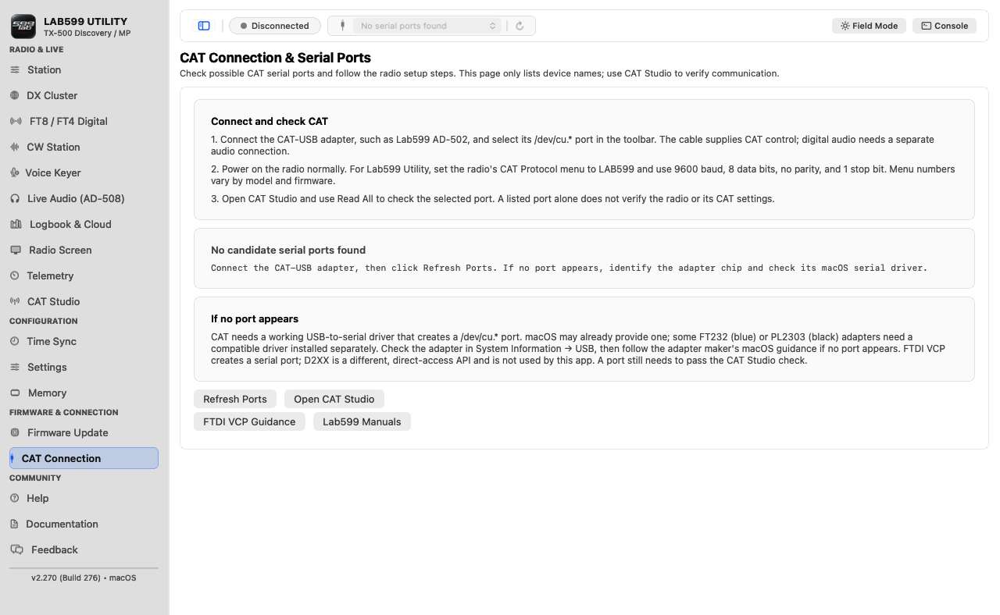
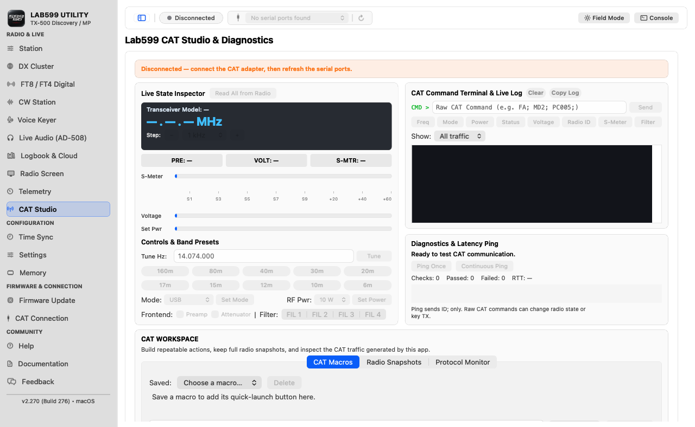
3. Station workspace
Station keeps your operator profile, local frequency presets, band reference and guarded CAT tuning in one place. Enter your callsign and locator in its preferences before logging or using online services. Applying a preset requests a radio change and checks the read-back; it never starts transmission on its own.
Use the controls for the currently connected radio only. If the read-back disagrees with a requested change, stop and inspect the radio rather than assuming it was restored to an earlier state.
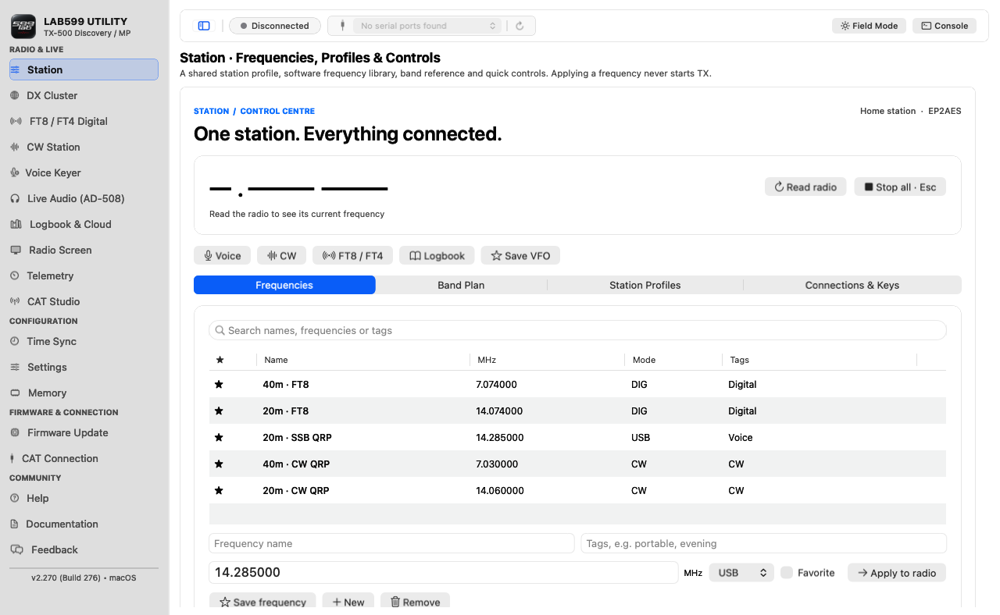
4. FT8 / FT4 Digital
- Connect CAT and an audio interface, then select the correct audio input and output in the digital workspace.
- Confirm time synchronization and choose FT8 or FT4 and the intended band or a custom frequency.
- Start monitoring. Check the receive level and decoded messages before arming transmission.
- Review the intended message, frequency and radio mode. Enable TX only when you are ready to operate. Watch the radio during the first transmission.
- Use Stop to halt the digital station. If the radio does not confirm a return to RX, follow the on-screen recovery prompt before any new transmission.
Auto QSO/CQ features can sequence messages after you enable them. Simulation lets you explore the interface without CAT or RF output; it is not a hardware test. The waterfall's transmit trace is a preview of generated audio, not an RF power measurement.
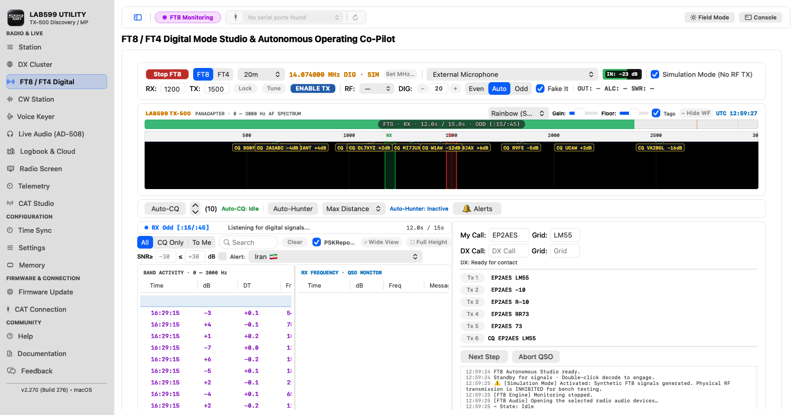
5. CW Station
Select the CAT port for keying and an audio input for decoding. Use the receive display and decoder to check incoming CW; use the keying and QSO controls only after confirming the radio and operating frequency. Practice Mode is for learning the interface without a radio.
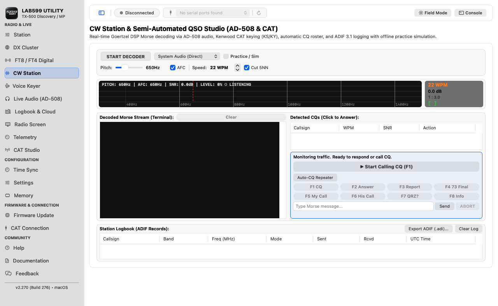
6. Voice Keyer
Choose an input and output route, record or import a voice clip, then preview it locally. Connect and verify the radio before sending audio. CQ repeat and live microphone reply take control of CAT/PTT while active. Esc stops the current keyer operation; check the radio's TX/RX indication afterward.
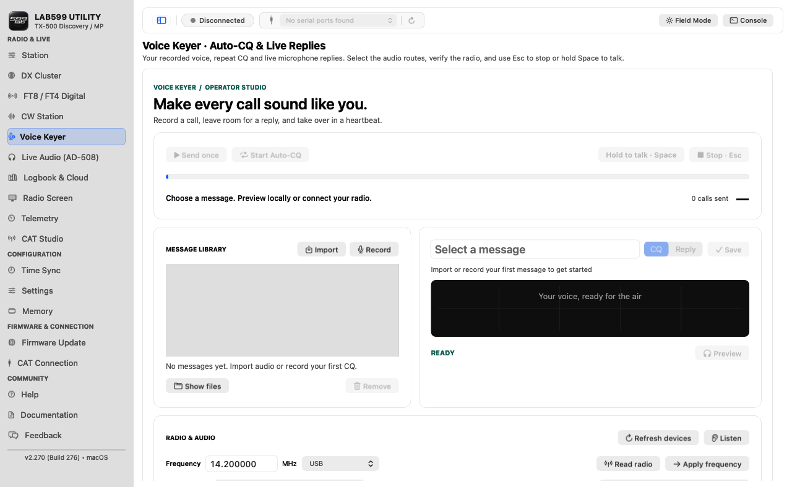
7. Live Audio
Connect a compatible audio interface to the radio's REM/DATA port. The tested AD-508 connects directly to Mac USB-C and enumerates as USB Audio with separate input and output devices. Choose the radio audio input and your preferred listening output, then start Listen Live. The spectrum, oscilloscope, level meters, filters and WAV recording operate on the selected Mac audio stream.
A generic USB Audio name does not establish the cable model or prove a radio connection. If the input is missing, check Audio MIDI Setup and macOS microphone permission. The stock blue CAT adapter connects to the radio's CAT port separately.
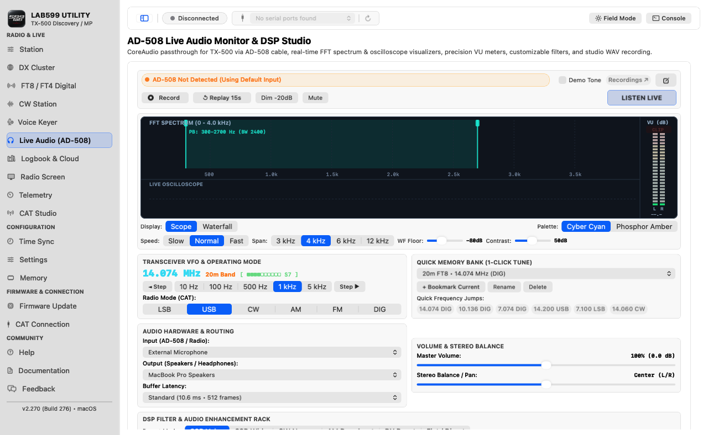
8. Logbook & Cloud
Enter a callsign and QSO details, then save the contact locally. ADIF import/export lets you move log data. Callsign lookup and cloud services such as LoTW and Club Log need network access and their own account settings; they are optional. Saved credentials are protected in macOS Keychain, which may ask for access when you open cloud features.
Check every lookup result and QSO field before uploading. A local log entry is not automatically proof that a cloud upload succeeded.
Open the Logbook & Cloud sidebar page for the contact form and saved-QSO table. The cloud status badges reflect the Mac's configured accounts, so they may differ from one installation to another.
Back to contents ↑9. DX Cluster
Choose a public cluster node and connect to see spots. Filters narrow what you see; selecting a spot can prepare a frequency change or QSO draft. It does not transmit automatically. Public Telnet nodes may carry your callsign in clear text, so do not use a password-protected account on an unencrypted node.
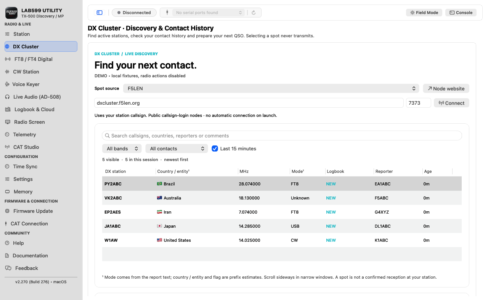
10. Radio Screen and Telemetry
Radio Screen reads the radio's display over CAT, can refresh it continuously, and saves or copies a screenshot. Telemetry shows live CAT measurements and warnings such as high SWR or voltage. Use Demo Mode to learn the panels without hardware. Do not treat demo values as readings from a connected radio.
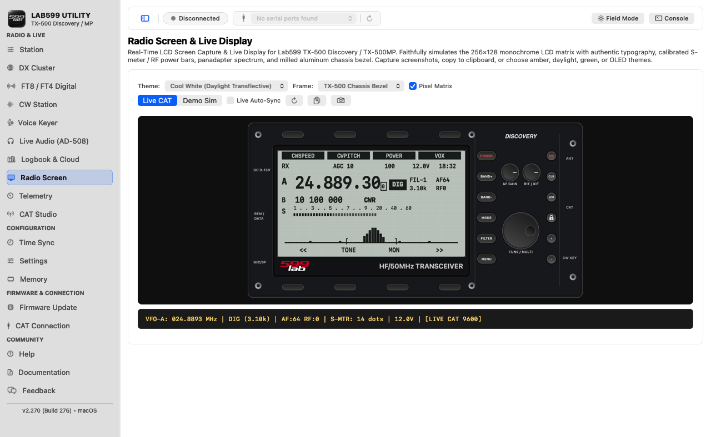
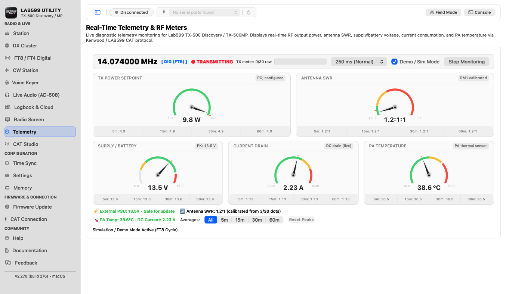
11. Settings and Memory
Settings can read and save the radio's 1024-byte configuration block. Memory manages a 100-channel bank, including local file edits and CSV import/export. Save a backup before writing either one. After a write, the app reads back and compares data; an interrupted or failed write may still have changed part of the radio's state.
Memory's built-in profiles are starting points. Check the frequencies, modes and all 100 slots before replacing a bank. Local file editing works without a radio; writing to hardware requires a verified CAT connection.
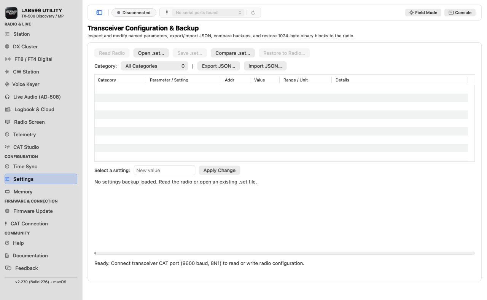
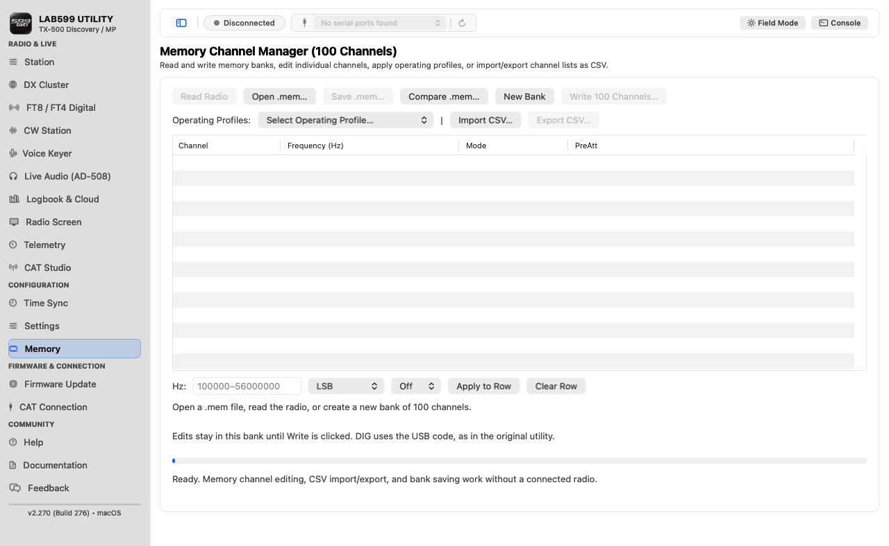
12. Time Sync
With the radio powered on normally, select the correct CAT port and choose whether the radio should show Mac local time or UTC. Review the clock preview, then use Synchronize Clock. The app reads back the radio's clock before reporting success. It maintains its own disciplined UTC clock for digital timing; it does not change the Mac's system clock.
If verification fails, inspect the radio's display before trying again: the radio's time may have changed even though the read-back did not match.
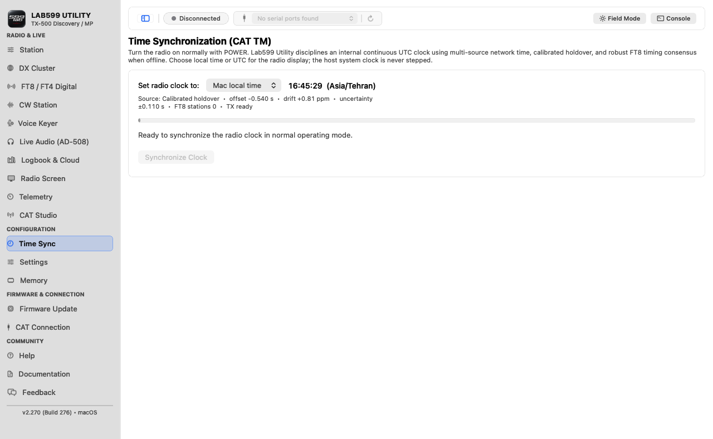
13. Firmware Update
- Choose a reviewed official
.fwfile or use Download from Lab599. The app checks the entire file against known official hashes. - With the radio on normally, CAT set to LAB599 and the correct port selected, click Verify Radio (CAT). A missing or incompatible identity stops the update.
- Power off and enter the bootloader exactly as your model's manual describes. Wait for “The loader is waiting...” on the radio.
- Click Update Firmware and confirm the model printed on your radio. Keep power and cable connected until transfer and final acknowledgement complete.
- Restart the radio and check the displayed firmware version.
The CAT check is performed before bootloader mode. Discovery, PRO and ALTAI cannot all be distinguished by CAT ID alone; the operator's model confirmation still matters. No app can guarantee recovery from every interrupted flash.
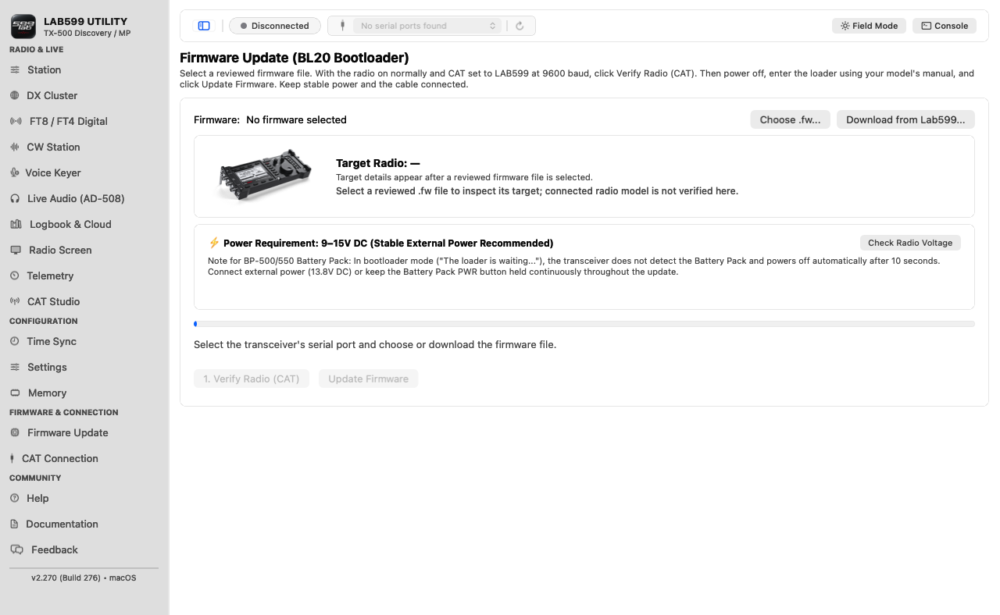
14. Documentation and Feedback
Documentation lists official Lab599 manuals, firmware and other resources. It is a download library; this Help page is the guide to using Lab599 Utility. Feedback prepares a GitHub issue with diagnostic details you choose to include. Review the text before submitting so it contains no private data you do not want to share.
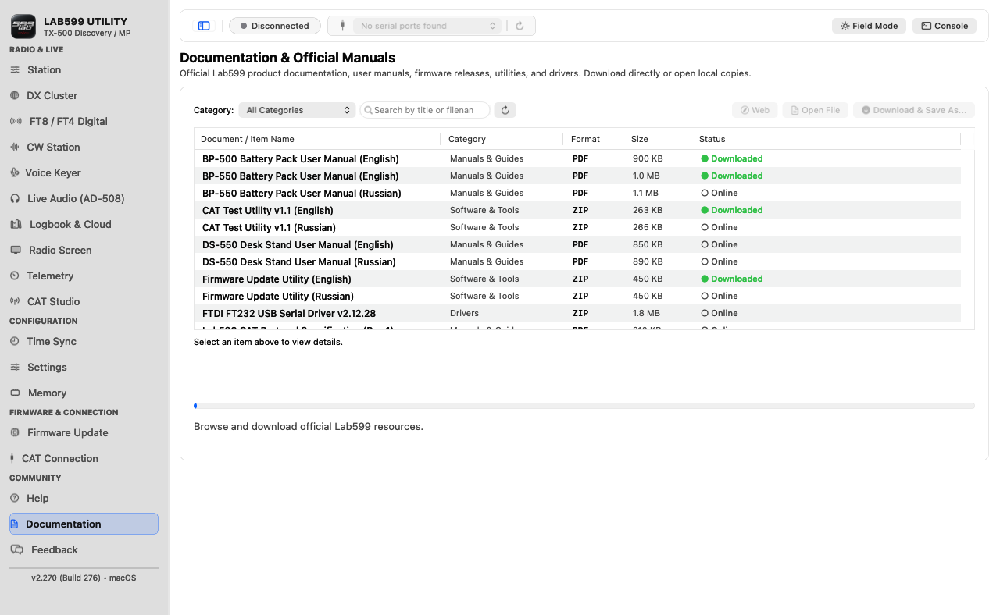
15. Troubleshooting
| What you see | What to check |
|---|---|
| No CAT port | Reconnect the adapter, refresh the port list, identify FT232 versus PL2303 in macOS System Information, then follow the compatible macOS VCP/serial driver guidance. D2XX alone is not this app's serial-port driver. |
| Port listed, no CAT reply | Close other radio apps, check the selected port, cable, radio power, LAB599 CAT protocol and 9600-baud setting. Use CAT Studio Read All. |
| No FT8/CW audio | Confirm that the selected audio interface appears as both an input and output in macOS, then check device selection, microphone permission, radio DIG/audio settings and levels. The CAT cable is a separate serial connection. |
| Unexpected TX state | Use the app's Stop control, then verify the radio's physical TX/RX state. Do not rely only on a software label after a connection failure. |
| Firmware update blocked | Confirm the official file, selected model and normal-mode CAT identity before entering the loader. Keep the same radio, port and stable power. |
| Keychain prompt | macOS protects saved cloud credentials separately. A new locally signed build can prompt again when you open Logbook or cloud settings. |
For a reproducible failure, use Feedback and include app version, macOS version, radio model and firmware, cable chipset, the exact steps, and the relevant diagnostic log. Never include passwords or private keys.
Further reading: Lab599 downloads · project source and releases.
Back to contents ↑